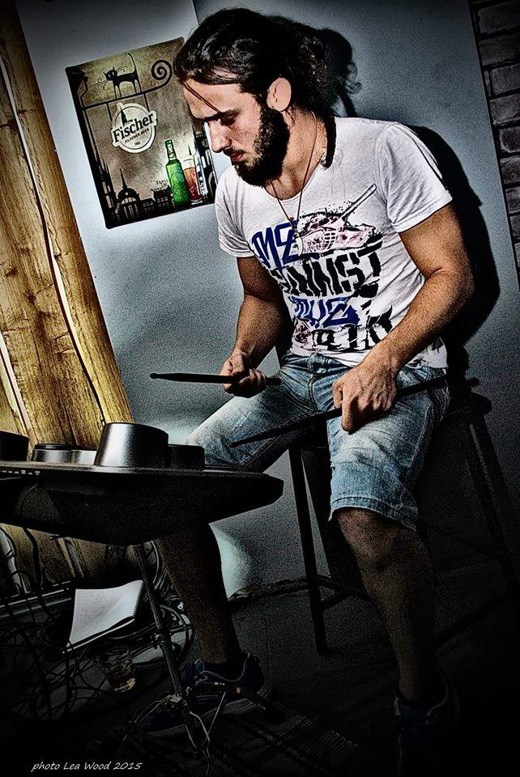

Απόφοιτος τμήματος πληροφορικής MIT. Έχει πάρει μέρος σε project game developing με γνωστούς τίτλους όπως Metal Gear Solid series, Hitman-Absolution, Rayman, The legend of Zelda, Hollow knight και έχει δημιουργήσει με την ομάδα του "A messed up Kitchen" και "Spacemania".
Απόφοιτος πανεπιστημίου Οξφόρδης και κάτοχος βεβαίωσης παρακολούθησης σεμιναρίων στο web developement από τις εταιρίες Εxperion Technologies και Mobikasa.Έχει δημιουργήσει σελίδες όπως η ******.com και *****.gr.